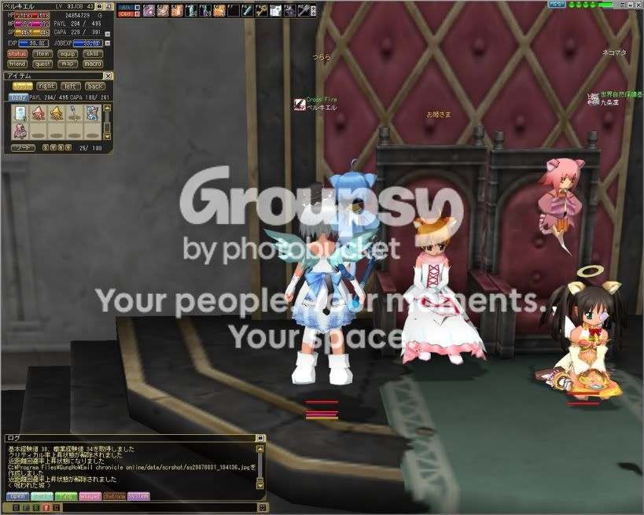
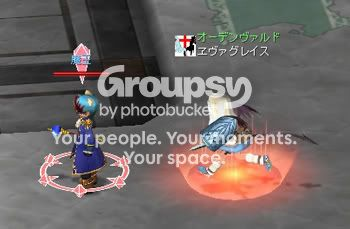
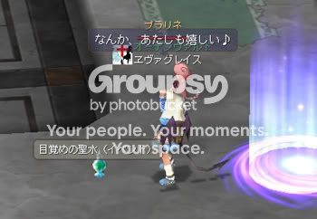
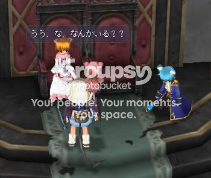

งั้นเย็นนี้ให้มันไปลองใหม่- -"...
-เป็นลูกสาวคนที่ 2 ในบรรดาพี่น้องทั้งหมด (มั้ง?)
-กินเก่งมากๆๆ
ข้อควรทราบ
- WP คือ โลกแห่งหนังสือ
- ซึ่งเมื่อเลือก “หยุดอ่านหนังสือ” จะทำให้กลับมาสู่โลกแห่งความเป็นจริง
- แต่ถ้าเลือก “เปิดไปยังหน้าต่อไป” ก็จะสามารถทำเควสต่อไปได้“
...........................................................................................
เนโกะมาตะโซระ (1 ตัวต่อ 1 ไอดี)
- เลเวล 30 และทำเควสขั้นต่ำ 20 ครั้ง
1. ให้ไปสำรวจบอร์ดหางานบนอัพทาวน์ (บอร์ดเดียวกับที่ทำ shidant pendant) โดยให้เลือกหัวข้อแรก
- หัวข้อที่ 2 เป็นคู่มือสำหรับมือใหม่
2. ให้ไปที่ร้านเช่าหนังสือที่แม็พ Utena lake โดยทางเข้าอยู่บนยอดเขาทางตะวันออกเฉียงเหนือ จากนั้นให้รับเควส (ต้องสวมใส่เนโกะมาตะไว้กับตัว)
- ถ้าไม่ทำให้เควสที่ทำค้างอยู่จบลง จะไม่สามารถรับเควสได้

3. การที่จะเข้าไปยังโลกแห่งหนังสือได้ ให้ไปคุยกับ ”คน” ที่ใส่ชุดเนโกะมาตะโมโม(ชมพู) และ ซุมิเระ(ม่วง) จากนั้นจะถูกวาร์ปไป….
- สำหรับหีบสมบัติ ถ้าเลือกหีบใหญ่จะได้ 100 G ในขณะที่ถ้าเลือกหีบเล็กจะได้ปูรุรุสต๊าฟ (มั้ง?) => แปลมาได้อย่างนี้น่ะ PURURUSUTAFFU

4. …ยังแม็พที่ซึ่งคนที่ใส่ชุดเนโกะมาตะยามาบูกิ(เหลือง) และ อากาเนะ(แดง) อยู่ (=> เป็นแม็พ Fruit forest) จากนั้นให้ผ่านเข้าวาร์ปไป….
- การที่จะผ่านไปยังแม็พต่อไปได้ จะต้องจ่ายค่าผ่านทางเป็น mushroom 10 ชิ้น หรือ จ่ายเงินเท่ากับ BaseLvx1000/2 G
- ถ้าตาย จะถูกวาร์ปกลับไปยังจุดเซพจุดเดียวกับที่ใช้กุญแจ (ก็จุดเซพน่ะแหล่ะ)

5. …ยังแม็พที่ซึ่งคนที่ใส่ชุดเนโกะมาตะมิโดริ(เขียว) และ ไอ(สีฟ้า) อยู่ (=> เป็นแม็พ volcano ที่เมืองใต้, อยู่บนยอดภูเขาไฟเลย) จากนั้นให้คุยกับทั้ง 2 คน (ต้องสวมใส่เนโกะมาตะไว้กับตัว) แล้วจะถูกส่งไป....
- สำหรับคนที่ยังเลเวลไม่สูงพอจะผ่านไปบนยอดได้ หนอนซิ่งก็เป็นอีกทางเลือกหนึ่งนะ

6. …ยังแม็พที่ซึ่งคนที่ใส่ชุดเนโกะมาตะอันซึ(ส้ม) อยู่ (=> เป็นผู้ชมอยู่ด้วย)ซึ่งเมื่อคุยกับคนนั้น (ต้องสวมใส่เนโกะมาตะไว้กับตัว) ก็จะต้องสู้กับปีศาจแห่งท้องฟ้า
- แข็งแกร่งพอควรโดยเฉพาะอย่างยิ่ง มีค่าป้องกันเวทย์สูงมาก


7. เมื่อปราบปีศาจได้แล้ว ให้เก็บไอเท็มที่ดรอปมา จากนั้นให้ไปคุยกับคนที่ใส่ชุดอันซึ แล้วเราก็จะออกมาจากโลกแห่งหนังสือ







8. จากนั้น ให้ไปคุยกับคนที่ร้านเช่าหนังสือ(ที่ยอดเขา Utena lake) แล้วก็ไปคุยกับป้าร้านตัดเย็บที่อัพทาวน์ จากนั้นให้กลับไปคุยที่ร้านเช่าหนังสืออีกที เราจะได้เข้าไปยังโลกแห่งหนังสืออีกเป็นครั้งที่ 2
- อย่างไรก็ตาม บางครั้งมีโอกาสที่ผ้าสามเหลี่ยมของโซระที่ควรจะได้รับ ไม่ถูกส่งมาในส่วนนี้ (หะ...หา...ฮ้า!!!) => แปลมาได้อย่างนี้อ่า -*-
9. เมื่อเข้าไปยังโลกแห่งหนังสืออีกเป็นครั้งที่ 2 คุณสามารถได้รับเสื้อ Acronia coat ที่เป็นสีเดียวกับเนโกะมาตะที่คุณสวมใส่ (ว้าว!!!) จากคนที่ใส่ชุดโมโม
- เพราะว่าเป็นสีเดียวกับเนโกะมาตะที่สวมใส่ ดังนั้น สีน้ำเงินของโซระก็นับด้วย(ทำโซระให้เสร็จก่อน แล้วเอาไปให้อีกไอดีทำโดยใส่โซระไว้)
- สบายใจได้ ก่อนที่จะรับสีที่ถูกต้อง จะต้องยืนยันก่อน (ดังนั้นคงไม่มีคนบ่นว่าเผลอกดผิดสีไปนะ => ยกเว้นพวกกดรัวๆ (ฮา~))
10. จากนั้นก็ให้ผ่านฉากที่คุ้นตาอีกครั้งหนึ่ง รวมทั้งฉากปีศาจ (เอ...แล้วต้องสู้อีกรอบรึป่าวหว่า -*-)
- ประโยคสนธนาแต่ละฉากจะต่างกันบ้าง
11. หลังจากนั้น ให้คุยกับคนที่ใส่ชุดอันซึ เนโกะมาตะโซระก็จะโผล่ออกมา
12. จากนั้นก็จะโผล่ออกมายังโลกภายนอกหนังสือ เสร็จแล้วให้ไปคุยกับร้านเช่าหนังสืออีกครั้ง ก็จะได้เนโกะมาตะโซระมาครอบครองแล้ว ^-^
- มีประโยคสนธนาระหว่างเนโกะมาตะโซระกับเนโกะมาตะตัวอื่นต่างกัน ขึ้นกับว่าเราสวมใส่เนโกะมาตะตัวไหนอยู่ระหว่างคุย
- ในที่สุด เควสก็จบซะที เหมือนจะเหนื่อยเนอะ ><
รูปยั่วน้ำลาย

credits :
http://kaleido-scape.paslog.jp/article/727195.html
http://blog.livedoor.jp/serald/archives ... 68910.html
http://ec.gamedb.info/wiki/Quest/連続イベント.html#n2166678
และ เว็บ translate อีกมากมาย